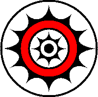

 達悟族文化
文化簡介：
蘭嶼島上主要居民皆為達悟族，達悟族又稱雅美族，是台灣南島語系唯一分布在台灣離島的一支民族， 達悟族是由各家族的長老為意見領袖的父系社會，這些家族也構成達悟族最重要的社會單位：漁團組織。 達悟族是中華民國原住民族中唯一以漁業為主的民族，但也會種植小米、芋頭等作物。一般來說， 漁業是男性的任務，而農業則由女性負責，並劃有漁團組織、粟作組織、灌溉組織等經濟工作單位。 每年的3－6月是達悟族的重要祭典：飛魚祭。達悟人視飛魚為神賜予的禮物，在飛魚季期間， 各漁船船員需住在共宿屋內，在這期間只捕飛魚，不捕其它魚種，而所有的漁獲皆與部落共享， 因為達悟族人相信若在飛魚祭結束前將漁獲分食完畢，來年就會有源源不絕的收獲。
飲食：
達悟族一天只吃2餐，分別是出門工作前的早餐和傍晚回家時的晚餐，午餐只在節慶、招待賓客或生病時， 因為有留在家中才吃。對達悟族人而言，飲食由主食（Kanen）和副食（Yakan）組成，其它佐料還有幫助吞嚥的湯水， 餐後則享用檳榔和紙菸。主食和副食相輔相成，缺一不可，如果只有主食或副食，則只能稱為點心，而非正餐。 最難能可貴的是達悟族人不會讓彼此陷入飢餓，例如當負責供應食物的男主人和女主人生病或生產， 或對年長者已無法自行取得食物時，親友會主動贈送食品給這些家庭。當主人有能力回饋時，會主動幫忙親友建造房屋、 開闢田地或造船等勞務性工作。這種相互餽贈可以被視為是經濟型態的一種，例如有些魚特別難捕捉， 就可以透過以物易物的方式交換。
飛魚：每年三月飛魚都會順著黑潮來到蘭嶼附近，展開達悟族人長達數月的飛魚祭。 首先在二月時由「招魚祭」揭開序幕，選定某日清晨，每位達悟男子盛裝赴會，將大船推至海邊， 並利用銀盔等物品招呼飛魚回來，然後以類似殺雞沾祭血於海邊的卵石，祈求今年的漁獲能像卵石一樣豐收。 接下來則是「捕魚祭」，在招魚祭的第一輪新月出現後，正式出海捕魚，達悟族人多利用點火(光)， 將性喜光點的飛魚引捕上船，滿載而歸。飛魚是達悟族人最重要的主食之一，對於飛魚的處理各部落有嚴格的規矩。 根據飛魚的腥味或肉質好壞嚴謹區分不同年齡階層專屬的魚種，分老人魚、男人魚、女人魚等。另外各部落在不同的月份、 海域時捕魚也有其限制，除了是傳統上歷史上的習俗外，也是對環境生態的一種尊重。
物質文化:
工藝文化
1. 拼板舟： 蘭嶼島最富盛名的標誌，也是達悟族人的精神象徵。製作拼板舟更是達悟族男人的第二生命。 選擇麵包樹、大葉山欖、欖仁舅等樹幹，依據不同材質特性組合拼接而成，故名拼板舟。完工時的雕刻，並上人形紋、 波浪紋以及船眼等圖騰。在船身分別使用在地的蘭嶼紅土、取自鍋底的黑灰以及火燒貝殼加海水浸泡製成的白灰， 將這紅、黑、白三色上漆完工後，才舉行新船下水儀式。現今拼板舟的樣式在蘭嶼各處都成為了最重要的地理標誌。

衣飾文化
2. 丁字褲：丁字褲是達悟男子的傳統服飾，是蘭嶼達悟族最獨特的文化之一。布料是使用麻布製成，盛裝通常穿著白色。 由於達悟人獨特傳統文化，加上蘭嶼天氣濕熱多雨，男人為了方便適應在海上生活，常常穿著丁字褲下海捕捉「龍蝦」、 「鹿角菜」等海洋生物。達悟族男子穿著丁字褲，櫬著古銅色的膚色，表現出堅毅情操，與樂天知命的性格，讓這裡的人和動物， 都與大自然緊密地融合成一體。
3. 魚皮盔甲：魚皮盔甲(戰甲)是達悟族男子穿著的，盔甲的材料是由水藤及剝鯙科魚皮所縫製編成的盔甲衣。 達悟族的傳統盛服盔甲(戰甲)，是祭典、驅邪、辟靈與戰鬥時候的穿著，雖然叫做「戰甲」，但並不是用之於戰爭。
祭典文化
(一) 小米豐收祭(mivaci)：
此時期是水芋、甘藷、小米等農作物及瓜果、飛魚的豐收期，已往蘭嶼的達悟族人都會以家族成員為單位，各自舉行小型的收穫祭， 演出傳統的Mivaci（搗小米），藉以感謝祖靈的庇佑，並祈求上蒼來年再賜予豐收。在國曆六月小米收割後舉行。舉行與否由村裡 的長老開會協商，現在種小米的家戶日漸減少，若要舉辦小米豐收祭須在年初事先通知各家戶廣植小米。西元1996年6月，紅頭村舉 辦了一次為期三天的小米豐收節，由村裡的青年策劃，除了傳統的樁打小米、吟唱祈求豐收的歌謠以外，也安排了一些達悟族歌舞的 表演。如勇士舞、頭髮舞，並將頭髮舞與樁打小米的儀式結合，呈現在同一個時空；顯示紅頭村民對歌舞形式的改良意圖。
(二) 飛魚招魚祭 (mivanwa)：
在每年二～三月舉行，意在召請飛魚，祈求漁獲豐碩。依照以前的慣例，大都在舊曆年前後，由紅頭村首先舉行招魚儀式。 當天清晨，族裡的男子由長老帶領至海邊，以手指沾雞血塗在海邊的卵石，向海面呼喊「飛魚回來哦！」 各船的船主則戴上銀盔、金片；面向海面祈求今年的飛魚飛回到船上來。之後，船主拾了五個卵石回到船主屋前的曬魚架， 放在曬魚桿及四個支架下面，並搖晃著，象徵魚架上因掛滿了飛魚而搖晃，有祈求豐收的意義。
(三) 飛魚收藏祭：
在六～七月舉行，表示飛魚汛期已結束，曬乾儲存以備冬季時食用。 結束捕飛魚的當天，村民將今年捕獲的大魚尾巴(通常是鮪魚)穿串吊掛在海邊，表示飛魚季節已經結束， 從那天起，不再捕抓飛魚，改抓其他的食用魚。
(四) 飛魚終食祭 (manoigoyin)：
在每年的中秋節以後，停止食用飛魚。並將未食的飛魚丟棄。

搗米舞
(五) 大船下水典禮(mangegen)：
●節慶由來:
居住在四周環海的達悟族 ，漁船是他們賴以維生的重要工具，也是最主要的財富；為了祈求新船下水之後，能夠航行平安、 漁獲豐 收，新船下水前所舉行的「船祭」，是達悟人一項隆重而神聖的祭典。其中，船體最大的十人大船下水典禮更加隆重而繁複；從籌備 到結束，往往要數月之久。建造船隻需花費大筆的材料費和雕刻工錢，而祭典時分贈親友的芋頭和禮肉更是所費不貲，如此龐大的造 船費用，對經濟狀況並不富裕的達悟人形成沈重的負擔。因此，近年來製造大船的族人已逐漸稀少。 達悟漁船分成大船、小船兩種。 這些船隻的舷側兩邊，有施以雕刻和未施雕刻者兩種，施以雕刻的船叫ipanitika，竣工後必須舉行盛大的下水典禮，即為「船祭」； 未施以雕刻的船叫ipiroaun，造好後可不必舉行下水典禮。
●活動內容:
達悟人在商定造船大計之後，便開始養豬、開墾新芋田，以備將來新船下水典禮之用。接著，大家上山分頭尋找適合造船的樹木， 依序伐取船尾、船首和船底龍骨，再以此為基礎，繼續伐取各層船舷的木板，由下層而上，逐一用木拴拼裝起來，拼好雛形的船， 須再經過細部修整和雕刻、彩繪，才能成為正式的漁船。達悟漁船的下水典禮，大致可分為以下幾個步驟：籌辦禮芋、圈檻養豬、 邀請賀客、賀客道賀、殺牲除毛、分贈禮肉，以及最後的下水儀式，也是活動的最高潮：
1.全體船員盛裝，分坐在船上的座位，船長捉一隻雞置於船尾魚艙內，向船靈祈禱全體船員平安健康，出海捕很多的魚。
2.船長帶領船員坐在船上唱和。詞意是：我們辛苦的砍伐木材，並協力將船造好，希望所有船員平安健康，出海捕很多的魚。
3.船長在船上揮舞長刀，驅走惡靈，船員面露猙獰，雙手抱拳用力抖動，大聲嘶吼助陣。
4.男性族人以同樣動作從四方列隊前來助陣。
5.族人拍打船身，再合力抬起，向上拋擲數次。之後，在眾人的簇擁下，將船抬向海邊，沿途不斷作猙獰狀，驅趕惡靈。
6.船下海繞巡一周後，返回岸邊。
7.船在岸邊就定位後，安置船飾、舵和槳，取一隻魚置於船上，象徵吉利豐收。
8.將船尾魚艙中的雞取出，宰殺後火烤去毛，清洗乾淨置於地上供奉船靈，祝禱將來出海平安，捕很多的魚。至此，船祭儀式全部結束。
(六) 新屋落成禮(mivazai)：
達悟人極為重視新屋落成，新屋的建造請親朋好友來幫工，藉此互相累積建屋的經驗，婦女們則需廣植芋田，以備落成時使用。 傳統的住屋建材全部取自蘭嶼本島，目前已有許多水泥新房產生，但舉行落成禮的心情並沒有改變。在達悟的習俗裡，父母親去世後， 家屋必須拆卸，建材由兒子們繼承，兒子們再利用這些建材聯合自己山上取回來的建材建造自己的家屋。不勞而獲的繼承被認為是恥辱的。